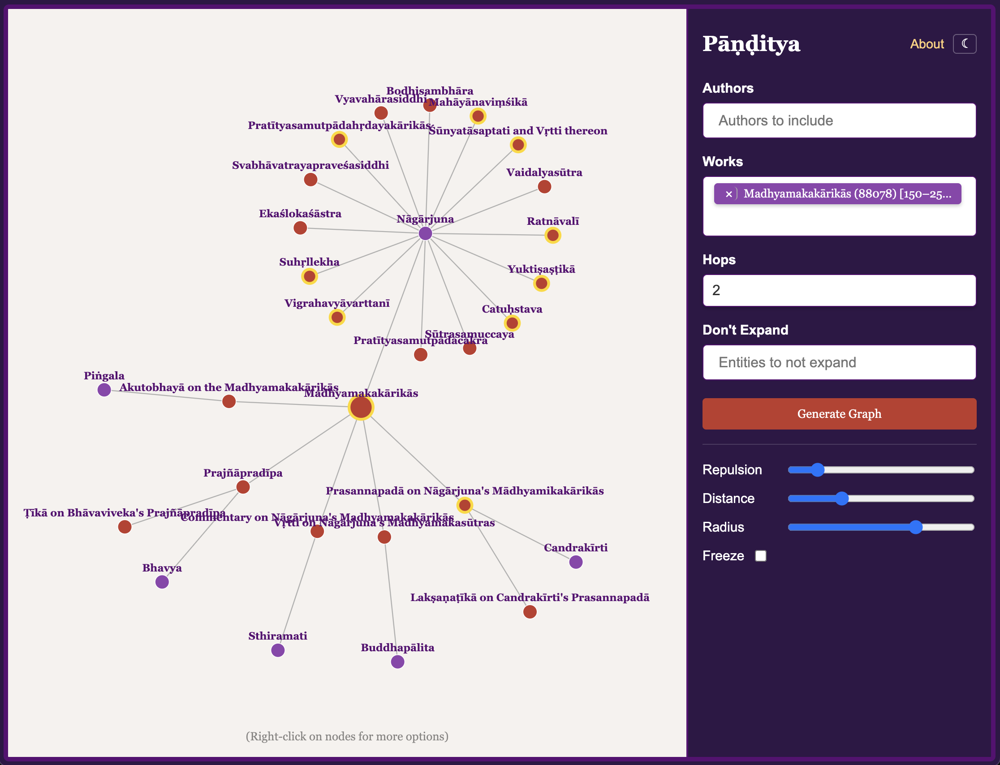
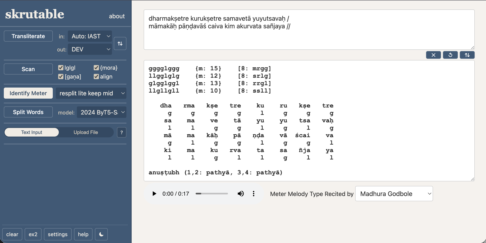
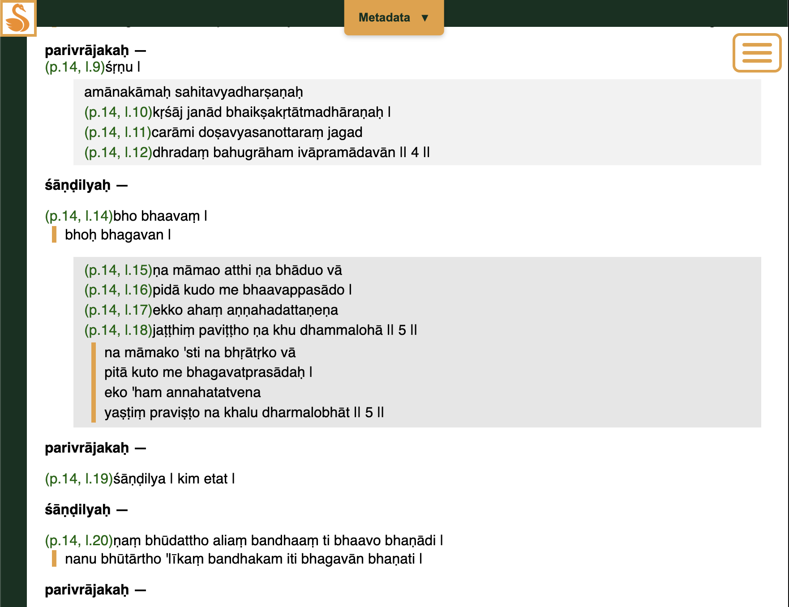
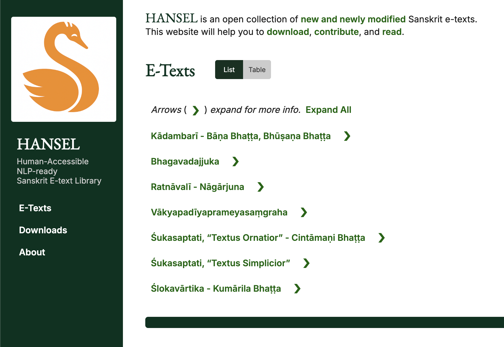

This is the first quarterly update ranging over all Kalpataru Grove projects and related research.
After getting HANSEL off the ground last December, I realized people were losing track of all the different activities I’m doing. So, rather than leaving people to call it just “Tyler’s stuff,” I created a brand, Kalpataru Grove, to help present the work under a unified banner. In March, I presented the ecosystem at UPenn’s Price Lab DH Seminar, and a few days ago I added Ko-fi to the website as a crowdfunding mechanism. It’s not that I need money to run these projects. But if the community ever wants to make them more independent from me personally, some buy-in will help, conceptually and, eventually, practically.
The bigger story, however, is Claude Code. Previously, I’d been relying on Gemini CLI and ChatGPT for my various technical work, which are pretty amazing in their own right. But Claude is now in a different league. Virtually overnight, it helped me revamp Pāṇḍitya’s UI by adding a sidebar and actual mobile-friendliness. I could finally use it on my phone! I also asked Claude, in as many words, to duplicate my personal website, which had been hosted on Squarespace. A few days later, my own server was running the new version — the one you’re now looking at — and I canceled my pricey Squarespace subscription. Hard to argue with results like that.

Gradually, I turned my newfound powers to the Skrutable web app, and now it too is actually enjoyable to use on the phone, and better on desktop as well. More subtly, I improved how settings work, making it easier for me to add more user options down the road. Along the way, I noticed that Skrutable’s requests to the Dharmamitra sandhi/compound splitting API had started failing, which was how I learned that the Dharmamitra team had changed the shape of their outputs. Claude helped me diagnose and fully fix the problem in one hour, start to finish. Oh, and another big win: I was finally able to implement the robust automatic scheme detection concept I’d had kicking around for years!

HANSEL also made progress. The 8th International Sanskrit Computational Linguistics Symposium (ISCLS 8) took place in March, and presenting HANSEL as a demo there gave me the impetus to re-record the video tutorials. More interestingly, again with Claude’s help: I added features for displaying drama (nāṭaka) texts, including chāyā toggling. This allowed me to add Bhagavadajjuka (thanks to Roland Steiner, Martin Straube, and Christian Ferstl), and Prabodhacandrodaya is in the works (thanks to Matthew Kapstein).

Vākyapadīyaprameyasaṃgraha also joined (thanks to Charles Li) — a case of a manuscript with heavy editorial markup, which I handle by retaining an intermediate file with the extra info and stripping it for the public edition. Building on that structure, I also added one more text: Nāgārjuna’s Ratnāvalī.

Some backstory for the Ratnāvalī: editing work on the lone manuscript — recently discovered at Drepung Monastery in Tibet — was done by young Chinese scholar Phur Tsham between 2016 and 2020. After publication in 2024, the book appeared in PDF form on Academia.edu in late 2025. When I learned of this on the H-Buddhism listserv, I got in touch with the author about whether he would condone sharing the new text on HANSEL. He graciously agreed. To be clear, the Sanskrit edition itself needs work — neglect of metrical considerations is just one issue that I happened to be interested to document. That said, I thought I should still get the e-text onto HANSEL as soon as possible to increase awareness, not least because the edition includes full-color plates of the manuscript. Rumor has it another scholar is already working on a re-edition. But I digress. The point is, this is exactly where HANSEL wants to be: in the thick of it, giving scholars a platform for their work and creatively transforming the data in ways I think can be of most help.
Taking stock and looking ahead, I am still very much enjoying working in the space of online Sanskrit e-texts online. But to be honest, I also feel a bit of vertigo about how much stuff is happening — I think because so many technical people are now taking advantage of AI. With Claude, dreams are becoming reality faster than we can talk to each other about what we’re doing. Projects that have been only a glimmer in someone’s eye for a decade now quickly erupt into reality, given a $20/mo subscription (or sometimes less), a GitHub account, and a few hours to spare. But all the productivity tools in the world won’t get us in a room together to talk about coordinating efforts. My hope is that people put what they’re making online, openly and publicly, as fast as they’re creating it. We’ll still duplicate some work — that's inevitable — but hopefully we’ll spend less time on each piece, and harmonize related data across projects more quickly and easily.
For myself at least, I have a refuge in Kalpataru Grove. Here, in my virtual workshop, I’m gradually consolidating best practices across projects, and I plan to publicize those patterns themselves as a further exercise in consistency and transparency. As with a publicly traded company, there are pros and cons to greater exposure to scrutiny, but I think the tradeoff is worthwhile so far.
As for keeping up with online e-text projects, specifically, I want SETI and its minimalist approach to inventorying to eventually do that. I love the way it plugs into Pāṇḍitya. But SETI takes time to get right. So, my next project, now in the prototype stage, is a sort of stopgap that throws a lasso around certain large e-text collections, illuminating their native structures so that potential users can be aware of them, understand them, and use them while SETI is still catching up. I'll apply this approach to a few pre-AI-era projects, and if it works, then I can extend it to up-and-coming, AI-era large collections, too, like Ambuda.
That's it for now. Things are moving so fast, I’m honestly not sure what I’ll be writing in the next quarterly update, three months from now. But hey, let's keep it up!